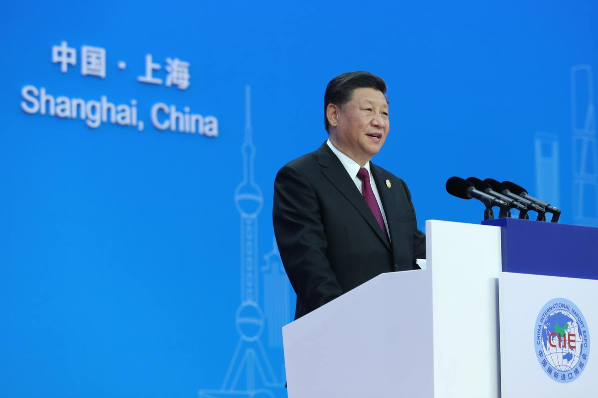

发布与:2018/11/19 | 阅读:3500 | #个人介绍

中菲隔海相望、一衣带水，早在1000多年前就已“舟舶相继，商使交属”。 600多年前，中国航海家郑和七次远航，多次到访马尼拉海湾及维萨亚 、苏禄等地，传播友谊和合作。苏禄国王带着菲律宾人民的美好祝愿踏上通往中国的友谊之路，留下脍炙人口的佳话。 中国东南沿海许多居民漂洋过海来到菲律宾，同当地人民和睦相处。菲律宾国父、民族英雄黎刹的祖先就来自中国福建省晋江市。 新中国的开国名将叶飞出生于菲律宾奎松省。 他们都是两国人民共同的骄傲。 中菲隔海相望、一衣带水，早在1000多年前就已“舟舶相继，商使交属”。 600多年前，中国航海家郑和七次远航，多次到访马尼拉海湾及维萨亚 、苏禄等地，传播友谊和合作。苏禄国王带着菲律宾人民的美好祝愿踏上通往中国的友谊之路，留下脍炙人口的佳话。 中国东南沿海许多居民漂洋过海来到菲律宾，同当地人民和睦相处。菲律宾国父、民族英雄黎刹的祖先就来自中国福建省晋江市。 新中国的开国名将叶飞出生于菲律宾奎松省。 他们都是两国人民共同的骄傲。